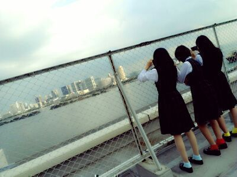
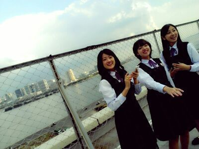
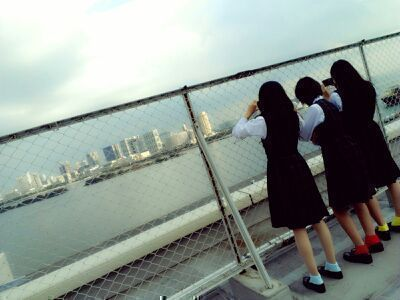
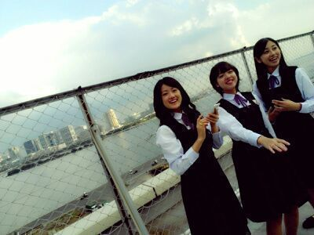

| 2012/12 12 Wed | ひめたん(*>ω<*)そ の241 |
春のメロディー
PV撮影エピソード拍手っ\＊/
まずー
ひめたんはあかの靴下だからね
把握よろしくね(｀・ω・´)
ジャンパースカートを着ると
中学生時代を思い出しますねー♪るん
で
でーですよ
まず、今回は景色を見てるとなんとなく勘づくかなーと思うけど
都内で撮りました＼(^^)／
とあるビルの屋上なんだけど
めちゃきれいなのよね東京！

左から
ちま (樋口日奈chan)
まあや (和田まあやchan)
るんるん (斎藤ちはるchan)
ですねー
これなかなかのカメラワークだと
思うでしょみなさんー？
この写真撮ったのはひめたんねー
3人は屋上から見える
お台場の風景を撮ってるのね(^^)
そして作品の中でひめたん
糸電話してたんだけどね
あの糸はかなりん(中田花奈chan)と
繋がってるのー(*>ω<｀*)
でね、糸電話をふたつ用意してね、
それをクロスさせるとね
直接的には繋がってないはずの相手の
声も微かに聞こえるの！
あのPVで説明すると
かなりんの声だけじゃなくて
みさみさ (衛藤美彩chan)と
ねねころりーた (伊藤寧々chan)の声も
聞こえるてこと(^^)
えややこしい？え？
じゃーね、もうね、糸電話しよう笑

あ、昨日の写真は、あのー...
間違えてパジャマ
着てきちゃったわけでもなく、
面倒だからパジャマ
着てきちゃったわけでもなく...
パジャマって言うから語弊があるのよ。
by.まま
ゥルゥーム・ウェアー(終始巻き舌)よ。
by.妹
....そゆことです( ^^ )
あの、だから
なんでルームウェアなのよーとか
そゆことは聞かないのー♪
PV撮影エピソード拍手っ\＊/
まずー
ひめたんはあかの靴下だからね
把握よろしくね(｀・ω・´)
ジャンパースカートを着ると
中学生時代を思い出しますねー♪るん
で
でーですよ
まず、今回は景色を見てるとなんとなく勘づくかなーと思うけど
都内で撮りました＼(^^)／
とあるビルの屋上なんだけど
めちゃきれいなのよね東京！

左から
ちま (樋口日奈chan)
まあや (和田まあやchan)
るんるん (斎藤ちはるchan)
ですねー
これなかなかのカメラワークだと
思うでしょみなさんー？
この写真撮ったのはひめたんねー
3人は屋上から見える
お台場の風景を撮ってるのね(^^)
そして作品の中でひめたん
糸電話してたんだけどね
あの糸はかなりん(中田花奈chan)と
繋がってるのー(*>ω<｀*)
でね、糸電話をふたつ用意してね、
それをクロスさせるとね
直接的には繋がってないはずの相手の
声も微かに聞こえるの！
あのPVで説明すると
かなりんの声だけじゃなくて
みさみさ (衛藤美彩chan)と
ねねころりーた (伊藤寧々chan)の声も
聞こえるてこと(^^)
えややこしい？え？
じゃーね、もうね、糸電話しよう笑

あ、昨日の写真は、あのー...
間違えてパジャマ
着てきちゃったわけでもなく、
面倒だからパジャマ
着てきちゃったわけでもなく...
パジャマって言うから語弊があるのよ。
by.まま
ゥルゥーム・ウェアー(終始巻き舌)よ。
by.妹
....そゆことです( ^^ )
あの、だから
なんでルームウェアなのよーとか
そゆことは聞かないのー♪

 雨の日は好き？
雨の日は好き？
ローファーが締まって足痛くなるから
最近はあんましすきじゃないかなー
長靴履いてるときに水溜まりに足つっこむのはすきだよ(^^)♪
雨の日の思い出なぞありますか？
雨の日のってか傘に関するエピソードで
ひめたんがはじめてサンタさんにお願いしたのが、幼稚園生のときで、
カエルさんの傘だったなあーって。
カエルさん...。
あっあと、小２の時にピンクの丈夫なジャンプ傘持ってたんだけど
全体重かけて破壊したことある(*>ω<*)
てへぺろっち感じやな///
12/1のさゆにゃんブログにひめたんが楽しそうに授業してる写真が載ってたんだけど、何の授業だったのかな？
[問題:9÷0=?]について
あつくあつく語りましたとさー♪
ひめたんにとってメンバーはどういう存在？
ひめたんはメンバー紹介とかしてくれないの？
ふぁみりーさーん*\(^^)/*
メンバーとかお友達とかってのを超えたものがあるよねっ
メンバー紹介かあ。
みなさんがしてほしかったらするけど、考えてなかったなー
紹介してくれた子にお返し紹介みたいなのはしてきたけどねんっ
せいたんの誕生日祝いブログに書いてくれないの？
ブログで生誕やった時期もあったけど、
今は本人にだけmailで伝えるようにしてます(^^)
すぺしゃる感ってやつです。ふふふ
せいたんやねねころみたいに背が小さいメンバーがもしひめたんより大きくて見下ろされたらどんな気分？
せいたんは何となく受け入れるけど
ねねころ (伊藤寧々chan)かあ。
どんなだろうーいやぁああー
川後のひなは元気かな？一緒にいる時は何してるの？(^ ^)
川後のひな元気だよ＼^^／★
かわごってぃ (川後陽菜chan)ね、昨日会った時は前髪がいい感じすぎたよー
一緒にいるときは川後のツンツン受けまくってるー∩^ω^∩
川後はねメールだとデレるのよ＊ふふ
ひめたん、俺の妹になってくれる
おにいちゃーんて呼ぶよ？///
お、おにいちゃーん///きゃ(ω)
 flumpoolってききますか？
flumpoolってききますか？
flumpoolさんのメジャーな曲は聴くけど
がっつしアルバムどーんとか聴いたことないなあ。
そういわれたら気になってきた！
タワレコータワレコいってくるー
(＊´・ω・＊)ひめたん
コメント(87)
2012/12/12 22:30